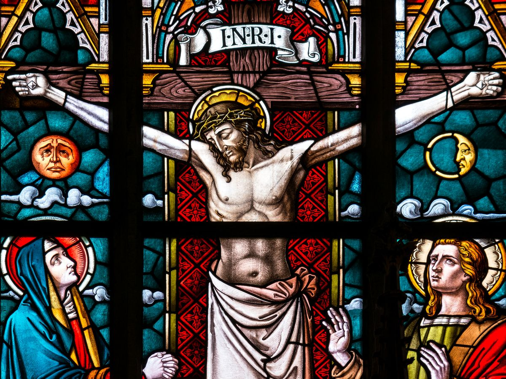

A luz natural na liturgia
Como a luz que atravessa a nave deixa de ser detalhe e se torna instrumento de oração e contemplação.
Ler artigo
Luz, liturgia, simbolismo e o cuidado de projetar templos que servem à fé por gerações.
Como a luz que atravessa a nave deixa de ser detalhe e se torna instrumento de oração e contemplação.
Ler artigoPor que todo projeto sacro começa pelo altar — e como a assembleia se organiza em torno dele.
Ler artigoPedra, madeira, luz e ouro: como os materiais carregam sentido e conduzem à devoção.
Ler artigoNovos artigos em breve.
Agende uma conversa inicial gratuita e receba uma proposta personalizada.